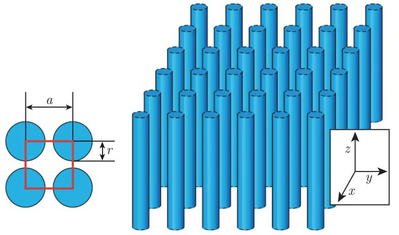

二维光子晶体沿其两个轴是周期性的，而沿第三个轴是均匀的.
如图所示为一种典型的四方晶格光子晶体.

这里假设介质柱无限高.
特定周期下，该结构在\(xy\)面内拥有光子带隙.
这个带隙中，光子晶体不存在任何扩展态，入射波会被反射.
与多层膜不同，这种二维光子晶体可以阻止光沿平面内任何方向进行传播.
?光子带隙
?扩展态
仍可以利用晶体的对称性对电磁波模式进行分类.
由于二维光子晶体在\(z\)轴上是均匀的，因此电磁波的空间模式一定在这个方向上振荡，波矢\(k_z\)可以是任意值.